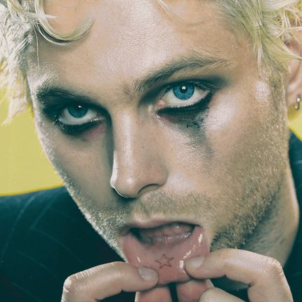
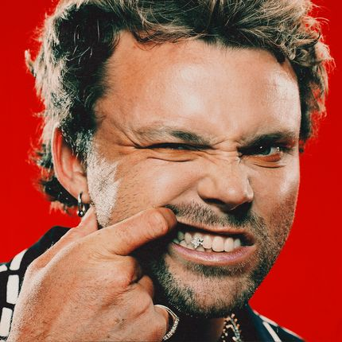
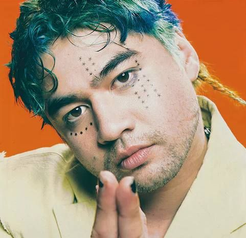

Luke Hemmings
Voz principal y guitarra rítmica
Luke Robert Hemmings nació el 16 de julio de 1996, y creció en los suburbios de Freemans Reach, en el distrito de Hawkesbury, Nueva Gales del Sur. Cuando tenía 10 años, los hermanos de Hemmings le enseñaron a tocar la guitarra, más tarde convenciéndole de tomar clases profesionales y aprender de vídeos tutorial de YouTube. Finalmente, Hemmings empezó a tocar en las calles durante su adolescencia. En 2011, a los 15 años, Hemmings comenzó a publicar covers de canciones en Youtube, bajo el nombre "hemmo1996". El primer vídeo de Hemmings, una versión de la canción "Please Don't Go" de Mike Posner, fue publicada el 3 de febrero de 2011. Cuando los vídeos de Hemmings comenzaron a obtener atención, invitó a Hood y Clifford a participar en sus vídeos. Actualmente está casado y con una hija
Michael Clifford
Guitarrista principal y coros
Michael Clifford nació el 20 de noviembre de 1995 en Sídney, Australia. Asistió al Norwest Christian College, donde conoció a sus futuros compañeros de banda Luke Hemmings y Calum Hood. Clifford ha hablado públicamente sobre sus experiencias con la salud mental y es conocido por su cercanía con los seguidores, especialmente en temas relacionados con la ansiedad y la autoestima.

Ashton Irwin
Baterista y coros
Ashton Fletcher Irwin nació el 7 de julio de 1994 en Hornsby, Nueva Gales Del Sur. A finales del 2011, Irwin recibe un mensaje de Facebook de su amigo y futuro compañero de banda, Michael Clifford, preguntando si estaría interesado en hacer música casualmente con él, Luke Hemmings y Calum Hood. Irwin aceptó, uniéndose al trío para subir versiones de canciones en el canal de YouTube de Luke, formandose así la banda 5 Seconds of Summer
Calum Hood
Bajista y coros
Calum Thomas Hood nació el 25 de enero de 1996 y se crió en Mount Druitt , Nueva Gales del Sur. Durante su infancia y adolescencia temprana, Hood mostró un gran interés por los deportes, en particular el fútbol, en el que veía un "futuro prometedor" y visitó un campamento de entrenamiento en Brasil con el fin de dedicarse profesionalmente a este deporte. Sin embargo, tras la formación de la banda y debido a su traslado a Londres a finales de 2012, decidió dejar de jugar al fútbol para dedicarse a la música.
